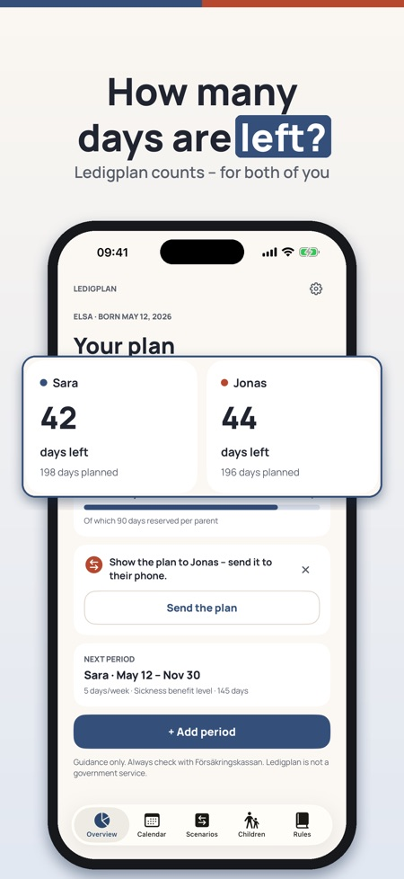
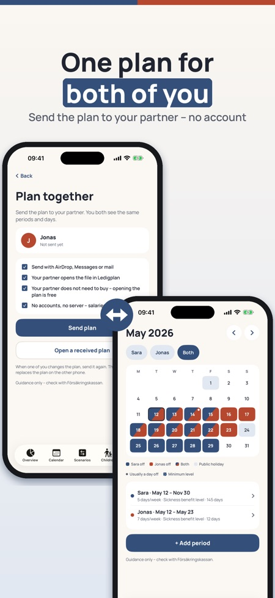
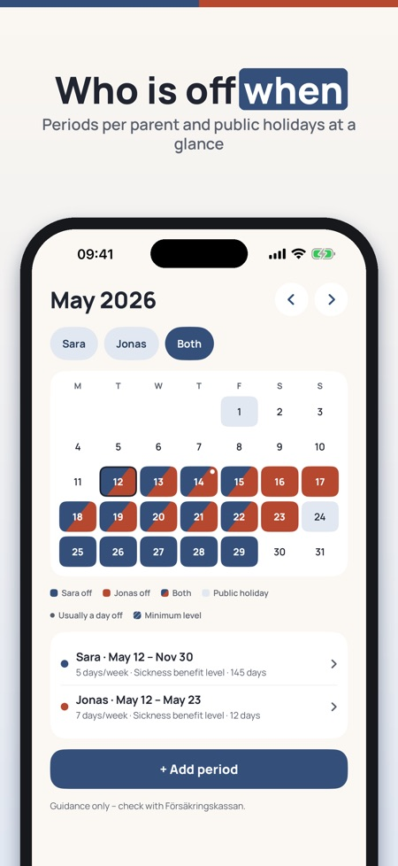

Forældreorlov, pappapermisjon. Plan 2027 now: put the leave in before Christmas and see the days you have left – for both of you.



How many parental leave days do you have left – and who takes which? Ledigplan counts the days for both of you, shows them in one shared calendar and lets you compare plans before you decide. For Sweden, Norway, Denmark and Finland. No login, no account.
The authorities' tools plan one parent at a time. Ledigplan is one plan for both of you – with the local terms you know: double days (dubbeldagar), quotas (kvoter), earmarked weeks (øremærkede uger).
Overview, calendar and rules for one child and one plan can be used without a purchase. Ledigplan Plus is a one-time purchase that unlocks partner sharing, scenarios, export and several children. No subscription.
The calculation is guidance only. Ledigplan is independent and not connected to Försäkringskassan, NAV, Udbetaling Danmark or Kela. You always apply with the authority.